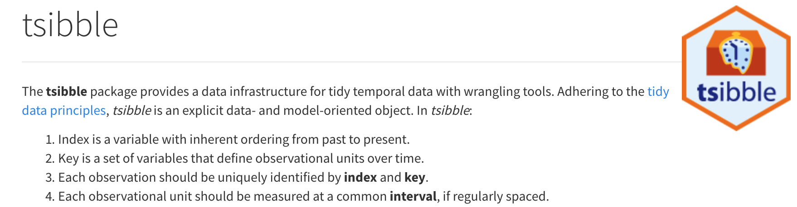
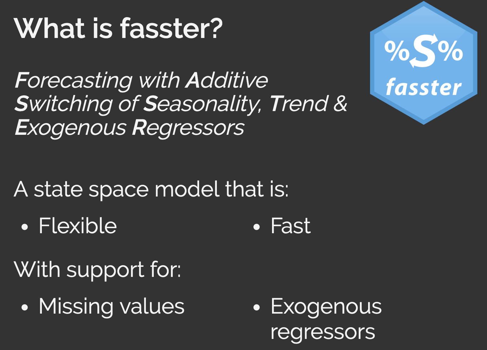
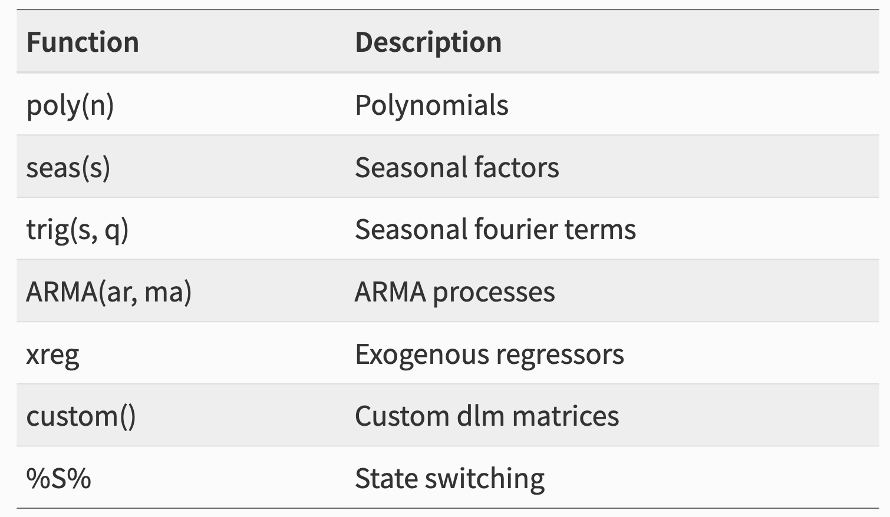

Tidy Forecasting
in R
with Tidyverts
Eugene Pyatigorsky / Full Stack Science
CIN-DAY RUG August 2019
The slides at: https://github.com/epspi/CINDAY_RUG_2019.08.20
Agenda
- What have Rob Hyndman & Monash Team been up to?
- From
tsto tidy data (tsibble by Earo Wang) - Time series visualization and feature extraction (feasts)
- Tidy modeling framework (fable)
- Extensibility, custom models (fasSter by Mitchell O’Hara-Wild)
Let’s make one thing clear…
All of this tidy forecasting goodness is brought to you by Hyndman, et. al.
Fetch and wrangle
## Observations: 190,048
## Variables: 4
## $ CRASHDATE <dttm> 2019-07-26 23:00:00, 2019-07-26 23:00:00, 2015…
## $ SNA_NEIGHBORHOOD <chr> "CORRYVILLE", "CORRYVILLE", "NORTH AVONDALE - P…
## $ CRASHSEVERITY <chr> "5", "5", "3", "3", "3", "3", "3", "3", "3", "2…
## $ GENDER <chr> "FEMALE", "FEMALE", "MALE", "FEMALE", "MALE", "…A data frame for time series

as_tsibble
traffic_ts = traffic %>%
.[, .(accidents = .N)
, by = .(CRASHDATE, SNA_NEIGHBORHOOD, CRASHSEVERITY, GENDER)] %>%
as_tsibble(key = c(SNA_NEIGHBORHOOD, CRASHSEVERITY, GENDER),
index = CRASHDATE)## Observations: 137,314
## Variables: 5
## Key: SNA_NEIGHBORHOOD, CRASHSEVERITY, GENDER [480]
## $ CRASHDATE <dttm> 2013-02-24 02:04:00, 2014-01-16 15:05:00, 2014…
## $ SNA_NEIGHBORHOOD <chr> "AVONDALE", "AVONDALE", "AVONDALE", "AVONDALE",…
## $ CRASHSEVERITY <chr> "1", "1", "1", "1", "1", "1", "1", "1", "1", "1…
## $ GENDER <chr> "FEMALE", "FEMALE", "FEMALE", "FEMALE", "FEMALE…
## $ accidents <int> 2, 3, 1, 1, 3, 1, 1, 3, 2, 1, 1, 1, 1, 2, 1, 1,…Easy Calendar Aggregations
traffic_hrly = traffic_ts %>%
group_by_key() %>%
index_by(date_hour = ~lubridate::floor_date(., unit = "hour")) %>%
summarise(accidents = sum(accidents)) %>%
ungroup()## Observations: 133,832
## Variables: 5
## Key: SNA_NEIGHBORHOOD, CRASHSEVERITY, GENDER [480]
## Groups: SNA_NEIGHBORHOOD, CRASHSEVERITY [248]
## $ SNA_NEIGHBORHOOD <chr> "AVONDALE", "AVONDALE", "AVONDALE", "AVONDALE",…
## $ CRASHSEVERITY <chr> "1", "1", "1", "1", "1", "1", "1", "1", "1", "1…
## $ GENDER <chr> "FEMALE", "FEMALE", "FEMALE", "FEMALE", "FEMALE…
## $ date_hour <dttm> 2013-02-24 02:00:00, 2014-01-16 15:00:00, 2014…
## $ accidents <int> 2, 3, 1, 1, 3, 1, 1, 3, 2, 1, 1, 1, 1, 2, 1, 1,…what about missing data?
traditional approaches
## hour N
## 1: 2 2053
## 2: 15 10904
## 3: 3 1253
## 4: 0 2554
## 5: 18 8289
## 6: 6 3109has_gaps helper
## # A tibble: 5 x 4
## SNA_NEIGHBORHOOD CRASHSEVERITY GENDER .gaps
## <chr> <chr> <chr> <lgl>
## 1 CALIFORNIA 1 MALE TRUE
## 2 WEST PRICE HILL 4 MALE TRUE
## 3 MT. AIRY 5 FEMALE TRUE
## 4 AVONDALE 4 FEMALE TRUE
## 5 ROSELAWN 2 FEMALE TRUEcount_gaps helper
pad implicit missing values
Functional rolling windows
slide, tile, stretchTime Series Decomposition & Plotting Helpers
Tidy modeling
Pipeline workflows!
traffic_sm = traffic_hrly %>%
index_by(date = yearweek(date_hour)) %>%
summarise(accidents = sum(accidents))
traffic_sm %>%
model(ETS(accidents)) %>%
forecast(h = "3 months") %>%
autoplot(traffic_sm)

Tons of flexibility

In theory it’s this easy!
questions?